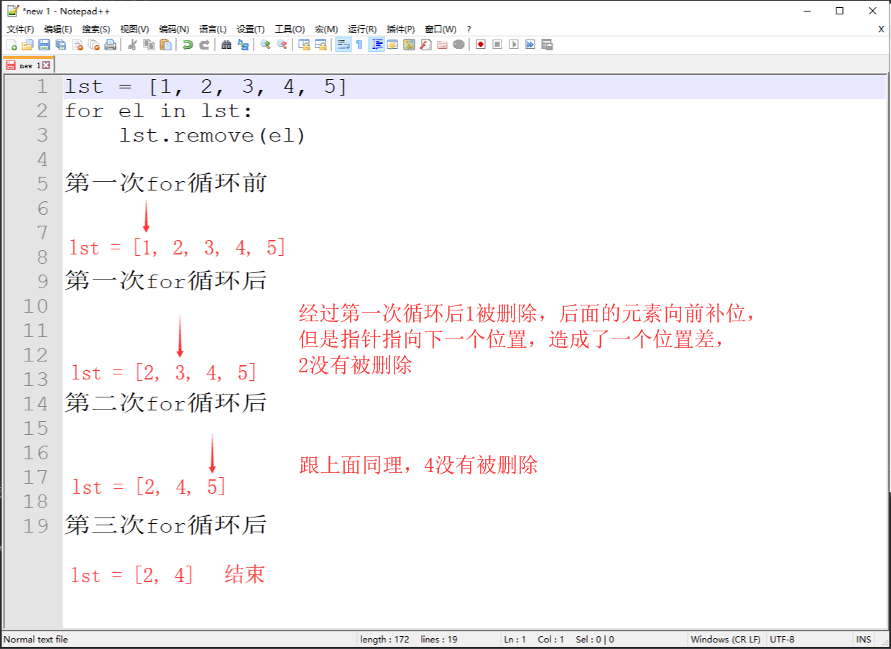

int.bit_length()
a = 10
print(a.bit_length()) # 4| str.capitalize() | 首字母大写，其余小写 |
|---|---|
| str.title() | 每个用特殊字符隔开的首字母大写 |
| str.index() | 计算元素索引位置 |
| str.find() | 计算元素索引位置 |
| str.center() | 将字符串居中 |
| str.format() | 格式化输出 |
| str.swapcase() | 大小写转换 |
str.capitalize()
s = "hello WORLD"
s1 = s.capitalize()
print(s1) # Hello worldstr.title()
s = "hello world"
s1 = s.title()
print(s1) # Hello Worldstr.index(n)
s = "hello world"
num = s.index("l")
print(num) # 2
num1 = s.index("l", 5, 10) # 9str.find()
s = "hello world"
num = s.find("l")
print(num) # 2
num1 = s.find("l", 5, 8) # -1str.center()
s = "DNF"
s1 = s.center(15, "*")
print(s1) # ******DNF******str.format()
s1 = "name:{} age:{} sex:{}"
print(s1.format("ZXD", 23, "man"))
# name:ZXD age:23 sex:mans1 = "name:{2} age:{0} sex:{1}"
print(s1.format(23, "man", "ZXD"))
# name:ZXD age:23 sex:mans1 = "name:{name} age:{age} sex:{sex}"
print(s1.format(sex="man", age=23, name="ZXD"))
# name:ZXD age:23 sex:man
str.swapcase()
s = "hello WORLD"
s1 = s.swapcase()
print(s1) # HELLO world
| list.reverse() | 将列表反向排列 |
|---|---|
| list.sort() | 将列表排序 |
list.reverse()
lst = [1, 2, 3, 4, 5]
lst.reverse()
print(lst) # [5, 4, 3, 2, 1]
list.sort()
lst = [2, 5, 1, 3, 8]
lst.sort()
print(lst) # [1, 2, 3, 5, 8]
lst.sort(reverse = True)
print(lst) # [8, 5, 3, 2, 1]
面试题：
lst = [1, 2, [3]]
lst1 = lst * 2
lst1[2].append(4)
print(lst1) # [1, 2, [3, 4], 1, 2, [3, 4]]
dict.fromkeys()
批量创建字典，第一个元素迭代成为key，第二个元素为所有key共用的value
两个坑：
dic = {}
dic.fromkeys("abc", 123)
print(dic) # {}
dic = dic.fromkeys("abc", 123)
print(dic) # {'a': 123, 'b': 123, 'c': 123}
dic = {}
dic = dic.fromkeys("abc", [1])
dic["c"].append(2)
print(dic)
# {'a': [1, 2], 'b': [1, 2], 'c': [1, 2]}
字典定义
dic = {}dic = dict()dic = dict(key=value)dic = dict([(key,value)])dic1 = dict(k1=1)
print(dic1) # {'k1': 1}
dic2 = dict([("k1", 1)])
print(dic2) # {'k1': 1}
转换为bool
print(bool()) # False
print(bool(0)) # False
print(bool([])) # False
print(bool("")) # False
print(bool({})) # False
print(bool(())) # False
print(bool(set())) # False
tuple与list互换
tu = tuple(list)lst = list(tuple)l = [1, 2, 3]
tu = tuple(l)
print(tu) # (1, 2, 3) # 转换为元组
lst = list(tu)
print(lst) # [1, 2, 3] # 转换为列表
set与list互换
lst = set(list)st = list(set)l = [1, 2, 3]
st = set(l)
print(st) # {1, 2, 3} # 转换为集合
lst = list(st)
print(lst) # [1, 2, 3] # 转换为列表
set与tuple互换
tuple(set)list(tuple)t = (1, 2, 3)
st = set(t)
print(st) # {1, 2, 3} # 转换为集合
tu = tuple(st)
print(tu) # (1, 2, 3) # 转换为元组
int和str互换
int(str)str(int)i = 123
s = str(i)
print(s) # 123 # 转换为字符串
i = int(s)
print(i) # 123 # 转换为整型
str和list互换
s = str.join(list)lst = str.split()lst = ["a", "b", "c"]
s = "_".join(lst)
print(s) # a_b_c
lst = s.split("_")
print(lst) # ['a', 'b', 'c']
| 是否有序 | 是否可变 | 可否迭代 | 查看方式 | |
|---|---|---|---|---|
| int | 有序（不支持索引） | 不可变 | 不可迭代 | 直接查看 |
| bool | 不可变 | 不可迭代 | 直接查看 | |
| str | 有序 | 不可变 | 可迭代 | 索引查看 |
| tuple | 有序 | 不可变 | 可迭代 | 索引查看 |
| list | 有序 | 可变 | 可迭代 | 索引查看 |
| dict | 无序 | 可变 | 可迭代 | 通过键查看 |
| set | 无序 | 可变 | 可迭代 | 直接查看 |
尝试一下利用循环列表删除元素，清空列表
lst = [1, 2, 3, 4, 5]
for el in lst:
lst.remove(el)
print(lst) # [2, 4]
原理：

解决方法：
lst = [1, 2, 3, 4, 5]
for i in range(len(lst)):
lst.pop(0)
print(lst) # []
lst = [1, 2, 3, 4, 5]
lst1 = lst.copy()
for el in lst1:
lst.remove(el)
print(lst) # []
尝试一下利用循环字典删除键值对，清空字典
dic = {"k1": 1, "k2": 2, "k3": 3}
for i in dic:
dic.pop(i)
print(dic)
# RuntimeError: dictionary changed size during iteration
解决方法：
dic = {"k1": 1, "k2": 2, "k3": 3}
dic1 = dic.copy()
for k in dic1:
dic.pop(k)
print(dic) # {}
尝试一下利用循环集合删除元素，清空集合
st = {1, 2, 3, 4, 5}
for el in st:
st.remove(el)
print(st)
# RuntimeError: Set changed size during iteration
解决方法：
st = {1, 2, 3, 4, 5}
st1 = st.copy()
for el in st1:
st.remove(el)
print(st) # set()
编码
数据.encode(编码)s = "你好啊"
se = s.encode("utf-8")
print(se) # b'\xe4\xbd\xa0\xe5\xa5\xbd\xe5\x95\x8a'
解码
编码后的数据.decode(编码)s = b'\xe4\xbd\xa0\xe5\xa5\xbd\xe5\x95\x8a'
se = s.decode("utf-8")
print(se) # 你好啊
用处：